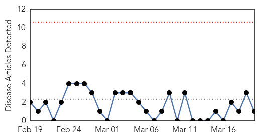
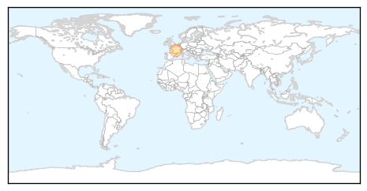

Chikungunya
30-Day Web Trend
0 alerts, 0 warnings

30-Day Twitter Trend
0 alerts, 0 warnings

Article Locations
Article Confidences

Top Articles:
Top Tweets:
-
No tweets found for Mar 20, 2015
Unknown
30-Day Web Trend
1 alerts, 0 warnings

30-Day Twitter Trend
0 alerts, 0 warnings

Article Locations
Article Confidences

Top Articles:
- 0.995
- Uganda to mark World Water Day amid typhoid outbreak
- 0.952
- No TB outbreak in Shawnee County, but awareness advised
- 0.950
- Blinding Syphilis: West Coast Cases Rise
- 0.948
- Brazos County Health Department Seeing New Surge in Flu Cases
- 0.934
- NWSC says its water is clean as suspected typhoid cases rise to 5,000
- 0.917
- Chicago Tribune
- 0.917
- Chicago Tribune
- 0.917
- Chicago Tribune
- 0.917
- Chicago Tribune
- 0.917
- Chicago Tribune
- 0.917
- Chicago Tribune
- 0.917
- Chicago Tribune
- 0.917
- Chicago Tribune
- 0.917
- Chicago Tribune
- 0.917
- Chicago Tribune
- 0.917
- Chicago Tribune
- 0.917
- Chicago Tribune
- 0.917
- Chicago Tribune
- 0.917
- Chicago Tribune
- 0.917
- Chicago Tribune
- 0.917
- Chicago Tribune
- 0.917
- Chicago Tribune
- 0.917
- Chicago Tribune
- 0.917
- Chicago Tribune
- 0.917
- Chicago Tribune
- 0.917
- Chicago Tribune
- 0.917
- Chicago Tribune
- 0.895
- HIV outbreak spreading fast across southern Indiana
- 0.889
- Spike in Indiana HIV cases calls for quick action, officials say
- 0.877
- African Swine Fever Restricts Pig Movements in Zambia
- 0.848
- Decline in U.S. Tuberculosis Rates Slows
- 0.837
- New blood test could help prevent antibiotic misuse
- 0.814
- Vietnam province reports virulent bird flu outbreak , news, Health News, AsiaOne YourHealth
- 0.788
- Kansas sees 27 people test positive for tuberculosis infection
- 0.774
- Chemist flu jabs in demand
- 0.721
- Admn bid to prevent encephalitis outbreak in Muzaffarpur district
- 0.718
- Our View: Response to Portland school outbreak points out CDC's value
- 0.709
- Nigerian Scientists Discover Two New Viruses
- 0.702
- 28 people test positive for tuberculosis at Kansas school
- 0.694
- Vanuatu searches for potable water as death toll rises to 13
- 0.665
- World TB Day: Sindh registered 576,162 patients since 2000
- 0.662
- HIV outbreak prompts request for help from CDC
- 0.626
- Bat with rabies found in county
- 0.621
- Vanuatu children at risk of deadly water-borne diseases
- 0.621
- China Airlines stewardess possibly spreads rubella to over 1,000 passengers
- 0.596
- Faculty, Staff Invited to “Pathways to Careers in Public Health” on March 26
- 0.579
- African parasite that spreads poverty by killing cattle tamed by its less lethal cousins
- 0.567
- Small hospitals big step
- 0.562
- Cyclone Pam cripples sexual and reproductive health services in Vanuatu - Vanuatu
- 0.559
- New meningococcal case at the University of Oregon
Showing top 50 articles...
Top Tweets:
- 0.557
- Is it the flu or is it a cold? Symptoms such as fever body aches tiredness and cough are more common and intense with the flu.